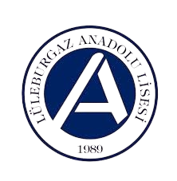
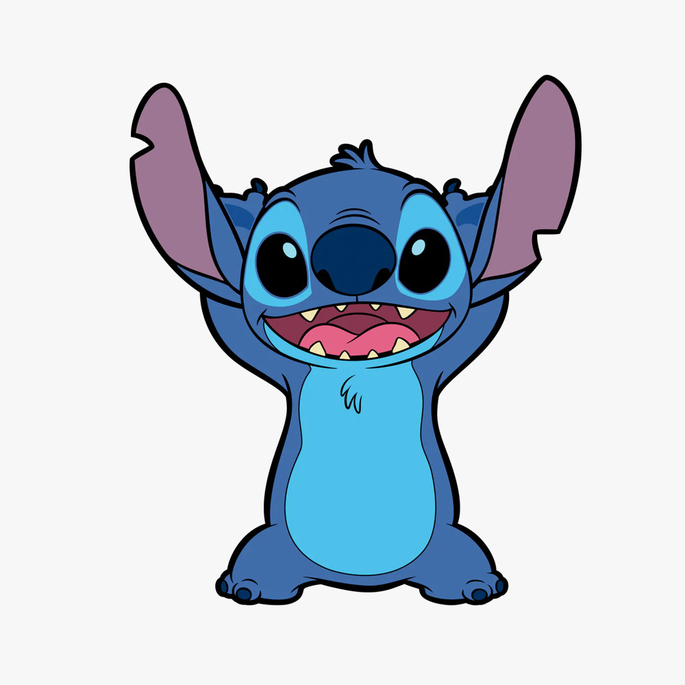

Program hakkında tüm bilgilere ulaş.
Çalıştayımızda yer alan aktif tartışma alanlarını incele.
Çalıştay kayıtları, sponsorluk anlaşmaları veya aklınıza takılan tüm sorular için ekibimize anında ulaşabilirsiniz. Sizi bilgilendirmek için sabırsızlanıyoruz!
